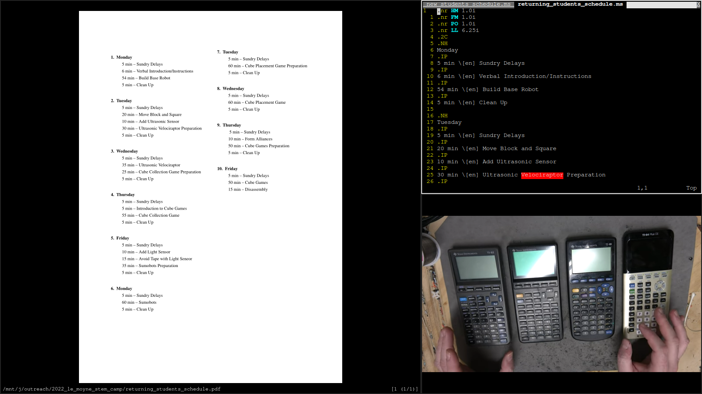

My Primary Operating System 2021—present
Operating System
I am now using Arch Linux. I previously used a base install of Debian on which I installed i3, but since I was already customizing many things, moving to a distribution that is designed for a customized installation, such as Arch, made sense. Also, Arch's packages are generally much more up-to-date than Debian's packages, and the fact that it is a rolling release distribution allows me to use the system indefinitely with out a full reinstall.
Arch is known for being difficult to install and maintain. Its updates are also known for breaking things. Consequently, I was concerned that it might not be practical. However, it was much easier to install than I expected. In fact, despite never having installed it before, I was able to install it faster than I normally install Debian (mostly because the Wi-Fi drivers were pre-installed). I was also under the impression that I would have to compile the kernel, but that was not the case. Its installation was far simpler than I expected.
Additionally, despite the reputation of Arch's updates, I have never installed an update that broke anything major. Occasionally, I have experienced an update that had minor mistakes, such as miss-coloring a button, but those are rare and relatively inconsequential. In general, I have found Arch to be reliable.
Hardware
I am running this operating system on an HP G72-250US laptop. I think that my family purchased it as a Windows 7 laptop in 2011 and used it until the hard drive began to die in late 2019. It has a 2 Core 1.86 GHz Intel Pentium P6000 CPU and 4 GB of ram.
My family has a different laptop now, so I decided to add a new hard drive to this old one in order to use it myself. I bought a cheap 150 GB HDD on eBay, which was a sufficient replacement. I do not need very much hard drive space because I keep most of my files on extremal drives. In fact, I only partitioned about half of the drive for my operating system, leaving the rest in case I decide that I want to add another operating system.
My main complain about the machine is that it becomes very hot and constantly runs its fan loudly. Sometimes the fan can actually be louder than the speakers. One time, when I was browsing the internet, the computer unexpectedly cut power to itself in order to prevent the processor from overheating. However, while its running, it has enough processing power to comfortably do everything that I need to do on a regular basis. However, I cannot use it for resource intensive tasks such as videoconferencing.
Partitioning Scheme
NAME | MAJ:MIN | RM | SIZE | RO | TYPE | MOUNTPOINTS |
|---|---|---|---|---|---|---|
sda | 8:0 | 0 | 149.1G | 0 | disk | |
-sda1 | 8:1 | 0 | 150M | 0 | ||
-sda2 | 8:2 | 0 | 6G | 0 | part | |
-sda3 | 8:3 | 0 | 35G | 0 | part | / |
-sda4 | 8:4 | 0 | 35G | 0 | part | /home |
Initial System Setup
I recorded these as the initial commands that I used to set up the system after its first boot. I do not remember very much about them, so I will not comment on them.
# pacman -S networkmanager
# systemctl enable NetworkManager
# pacman -S grub
# grub-install --target=i386-pc /dev/sda
# grub-mkconfig -o /boot/grub/grub.cfg
# passwd
# vim /etc/locale.gen
# vim /etc/locale.gen
# locale-gen
# vim /etc/locale.conf
# ln -sf /usr/share/zoneinfo/America/New_York
# ln -sf /usr/share/zoneinfo/America/New_York /etc/localtime
# vim /etc/hostname
# vim /etc/hosts
# vim /etc/hostname
# exit
Connecting to Wi-Fi
Here is how I connected the machine to a Wi-Fi network.
# info NetworkManager
# nmcli dev wifi list
# nmcli device wifi connect NETWORK_NAME password PASSWORD
# nmcli connection
# ping various-and-sundry.com
Adding A User
I created a user and gave it sudo privilege by adding %wheel ALL=(ALL) ALL to the /etc/sudoers file using visudo.
# useradd -m idm
# usermod -aG wheel idm
# export EDITOR="/usr/bin/vim"
# visudo